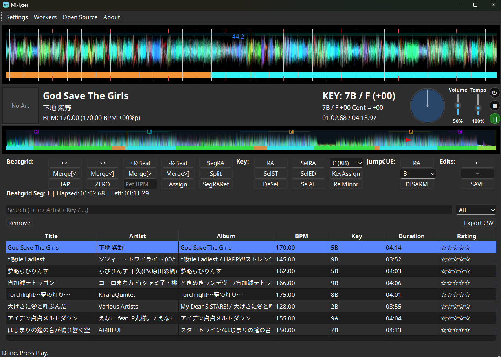

DJのために精度を重視したトラックアナライザー。
Mixlyzerはトラックをスキャンし、テンポとキーの変化を検出し、シームレスなジャンプのためのCUEペアを提案し、素早く正確に編集できるインタラクティブなエディターを提供します。
細部までシンクを維持
静的/動的ビートグリッド、キーのマップ、JumpCUE提案を1つのタイムラインにまとめ、素早く確認できます.
動的ビートグリッド
BPMと位相を精密にトラッキング
キー・モジュレーションマップ
ミックス中もキーシンクを維持
JumpCUEペア
前後ジャンプのためのシームレスなつながり

動的ビートグリッドとキー・マップを表示するMixlyzerセッションの例。
複雑なトラックに対応する機能
ジャンルを問わずテンポやキーが変わるトラックで安定したグリッドを作るために、アニソン・同人・音ゲー・ボカロ・VTuberの曲も意識して設計しました。
静的ビートグリッド解析
グローバルBPMを素早く固定
トラックのグローバルBPMと位相を検出し、信頼できるスタートグリッドを作ります。
動的ビートグリッド解析
テンポが変化するトラックに対応
複数のテンポセグメントに分割し、BPMと位相の変化を正確にマッピングします。
動的キー解析
キー・モジュレーションを追跡
時間によるキー変化を追い、調和のとれたミックスを維持します。
JumpCUE解析
ジャンプに最適化されたキュー
前後ジャンプに適した互換CUEペアを見つけます。
高速インタラクティブ編集
DJの速度に合わせた編集
内蔵インタラクティブエディターでビートグリッドを素早く効率的に仕上げます。
エクスポート
他ソフトとの連携
テンポセグメントとJumpCUEをXMLエクスポートやJumpCUEレンダリングでライブラリへ直接出力します。
一般的なワークフロー
必要な作業はすべてドラッグ＆ドロップから。
1) トラックを読み込む
ファイルをドラッグ＆ドロップするか、ライブラリペインから選択します。
2) 自動解析
テンポセグメント、キー、JumpCUEペアを自動で検出します。
3) グリッド微調整
BPM調整、セグメント移動、特定区間の再解析を途切れなく行います。
4) キュー確認
JumpCUEやオーバービューで、保持/リネームするキューを確認します。
5) エクスポート
編集を保存し、XMLまたはレンダリングしたオーディオで出力します。
オプションA - uvを使う（開発者向け）
- uvをインストール（Python 3.12+）。
- リポジトリをクローンしてフォルダーを開く。
- uv syncで依存関係をインストール。
- uv run python -m app.main で起動。
オプションB - リリース版バイナリ（一般ユーザー向け）
- 最新ビルドをダウンロード。
- 解凍して実行ファイルを起動。
- ミュージックライブラリのパスを設定し、解析とエクスポートを実行。